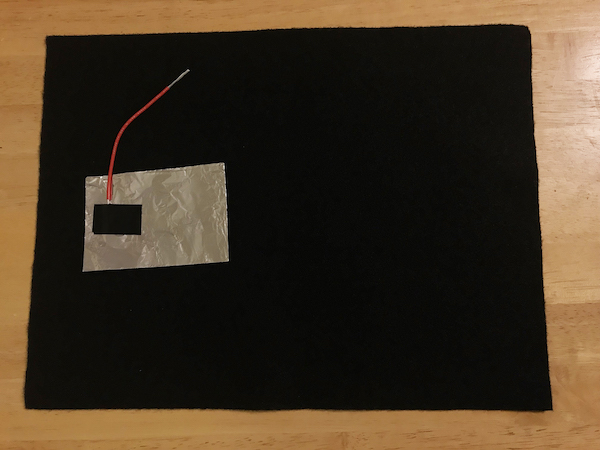
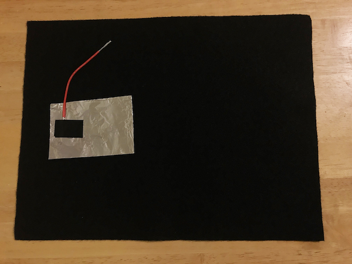

Step 4
Tape one end of the wire directly onto the aluminum foil. Make sure the metal from the wire is making good contact with the foil.
Tape one end of the wire directly onto the aluminum foil. Make sure the metal from the wire is making good contact with the foil.
